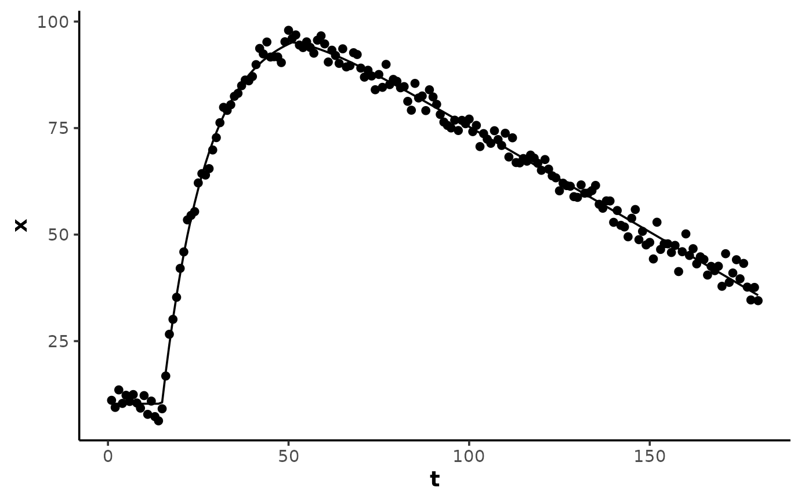

Calculate a two-phase curve: a fast monoexponential() primary response
plus a slow linear secondary drift beginning near the primary asymptote.
Model family fit by analyse_kinetics() with
method = "exponential_drift", and by stats::nls() via the self-starting
wrapper SSexponential_drift().
Arguments
- t
A numeric vector of the predictor variable (time).
- A
A numeric parameter for the starting baseline of the response variable.
- B
A numeric parameter for the ending asymptote of the response variable.
- tau
A numeric parameter for the time constant (\(\tau\)) of the exponential response, in units of the predictor variable
t.- slope_B
A numeric parameter for the linear drift rate
dx/dtof the secondary phase, in response units per unit of the predictor variablet.- drift_fraction
A numeric fraction of the primary amplitude
B - Ain(0.5, 1)at which the linear drift begins, where the primary response reachesA + drift_fraction * (B - A).- TD
A numeric parameter for the time delay before the onset of the exponential response, in units of the predictor variable
t. IfNULL(default), a 3-parameter model without time delay is used.
Details
Model equations
5-parameter:
A + (B - A) * (1 - exp(-t / tau)) + slope_B * pmax(t + tau * log(1 - drift_fraction), 0)6-parameter:
A + (B - A) * (1 - exp(-pmax(t - TD, 0) / tau)) + slope_B * pmax(t - TD + tau * log(1 - drift_fraction), 0)
A, B, tau, and TD are as for monoexponential(). The drift onset
is not a free estimate: the secondary drift is exactly zero before
TD - tau * log(1 - drift_fraction) (TD = 0 when absent), and
drift_fraction = 0.95 places the onset at TD + 3 * tau.
The excursion point texc is where the drift rate overtakes the decaying
primary rate, TD + tau * log(|B - A| / (|slope_B| * tau)), floored at the
drift onset.
Examples
## create an exponential curve with late linear drift and random noise
set.seed(13)
t <- 1:180
x <- exponential_drift(
t, A = 10, B = 100, tau = 12,
slope_B = -0.5, drift_fraction = 0.95, TD = 15
) + rnorm(length(t), 0, 2)
data <- data.frame(t, x)
## the drift onset fraction is held constant in the formula
model <- nls(
x ~ SSexponential_drift(
t, A, B, tau, slope_B, drift_fraction = 0.95, TD
),
data = data,
algorithm = "port",
lower = c(-Inf, -Inf, 0, -Inf, 0),
control = nls.control(warnOnly = TRUE)
)
summary(model)
#>
#> Formula: x ~ SSexponential_drift(t, A, B, tau, slope_B, drift_fraction = 0.95,
#> TD)
#>
#> Parameters:
#> Estimate Std. Error t value Pr(>|t|)
#> A 10.305631 0.558620 18.45 <2e-16 ***
#> B 99.612728 0.302186 329.64 <2e-16 ***
#> tau 12.062878 0.202335 59.62 <2e-16 ***
#> slope_B -0.495293 0.005346 -92.64 <2e-16 ***
#> TD 14.956965 0.167821 89.12 <2e-16 ***
#> ---
#> Signif. codes: 0 ‘***’ 0.001 ‘**’ 0.01 ‘*’ 0.05 ‘.’ 0.1 ‘ ’ 1
#>
#> Residual standard error: 2.091 on 175 degrees of freedom
#>
#> Algorithm "port", convergence message: relative convergence (4)
#>
y <- predict(model, data)
# \donttest{
if (requireNamespace("ggplot2", quietly = TRUE)) {
ggplot2::ggplot(data, ggplot2::aes(t, x)) +
theme_mnirs() +
ggplot2::geom_point() +
ggplot2::geom_line(ggplot2::aes(y = y))
}

# }